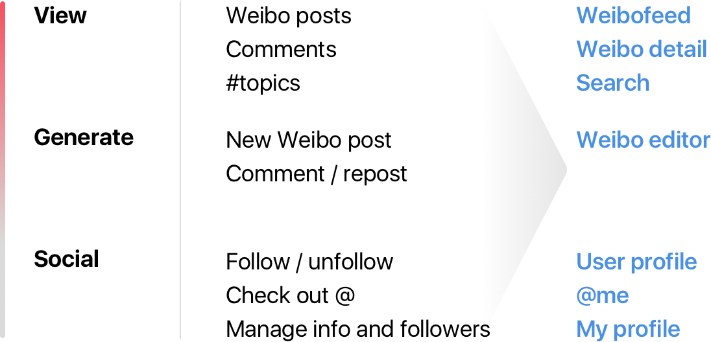
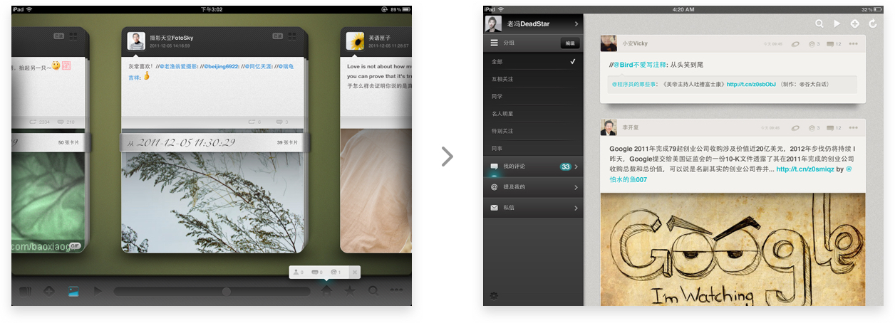

In 2010, Sina Weibo, a Twitter-like social network in China, gained its first 10 million mobile app users. Also this year, Apple announced the iPad which soon became a hit in global markets. There was a gap between iPad Weibo users’ expectation and what Sina offered. I decided to build a Weibo reading app with my classmates. The app was installed on over 2 million iPads and got a 4.5 of 5 rating in its lifetime. It also became my first successful practice for user-centered design iteration.
After reading the top reviews for the new official Weibo iPad app on the App Store, I made a list of main frictions and another list of expected features. Then, I organized a meet up of 4 frequent mobile Weibo users, and had them speak out loud while playing with the official Weibo app. By observing and listening, I refined the lists and added user facts, and then built a mind map based on them. Since the app was for an entirely new platform, the map started from Apple’s selling points of iPad which was a good foundation.
Based on the preliminary answers to the core design questions, I was able to come up with a basic prioritized feature grid which enabled me to initialize the design interaction.
From the basic features, I set up several root nodes for the information architecture. It’s time to start building the flow.
Starting with the mind map and feature grid, I sketched the first version of information architecture with a basic flow and that was when everything started getting more clear and solidified.
With the information architecture and the mind map, I used wireframes to do rapid prototyping and logic proof. For higher communication efficiency and better team alignment, I made several Keynote prototypes using placeholder assets to show the UI logic and design. Instead of displaying the complicated wireframe flows, the interactive Keynote slides boosted the feasibility check and decision makings.
It was not long before the Keynote prototypes passed our internal logic and feasibility checks and I started working on the first Hi-Fi UI mock-ups for our first ad-hoc test. Later, we showed our first MVP prototype to selected users.
The prototype did offer several beloved innovations which became part of the foundation of the launch version, but the more important thing was absorbing what we learned from the ad hoc test users and to make a concrete launch version. I made a simple table of what worked and what didn’t work for the two core features of our minimum viable product.
For the first time, Weibo was organized into “cards” on the digital screen. All the content of one post was neatly placed and reachable within one tap. The large cards emphasized the content and could be swiped or flipped just like reading a magazine or watching a digital photo frame.
The hub was designed to be users’ personal center which let them check out and manage comments, reposts, and followers. The interface logic was simplified thus users could access all the frequently needed information at a glance. The design seems so obvious today but was surprisingly missing in the official Weibo iPad app at that time.
Users accepted our core idea, but the UI foundation was still far from concrete. Having the feedback tables, I built an “Issue. Change. Action.” map to figure out the next actions that needed to be done.
Based on the actions, the most crucial change was on the Weibofeed. I redesigned the cards to make them adaptive to the content, reorganized them into a vertical scroll view, and adjusted the color scheme of the feed interface:
The revamped design got better feedback but we found a new problem: the cards were too wide which made the text on them longer. This required longer horizontal eye moving on every single card.
Inspired by the editorial designs in magazines and newspapers, I designed a double-column Weibofeed with adaptive Weibo cards. With other polished features like Stack View and Composer, we finally got a production-ready design for the launch version and started development.
The neat double-column cards took advantage of iPad’s multi-direction large canvas and offered a rich while organized content layout. I designed several gesture controls to let users intuitively play with the interface.
Instead of switching to a different screen every time, I designed Stack View to connect parent view and child views. Users were able to swipe left and right to navigate between the views. The avatar frames will wiggle horizontally to offer clear affordances.
For the first time, users could edit and post pictures on Weibo with one single app. We offered a well-crafted photo editing tool built in Composer. The tool was powered by native iOS graphical technology with an easy-to-use interface.
VCard was ready for its debut.
After publishing the launch version to the App Store, I realized that we needed a new process to gather user feedback and make on-board iterations. Since we were building a social networking app, we actually got the opportunity to have more direct interactions with the user community. So I contacted Sina and set up a verified app page on Weibo.
We got 23,437 followers after an update adding a portal to the official app Weibo, and comments started streaming in. The page enabled me to get closer to the end users and react faster. We did more than 4 major updates and countless small fixes during VCard’s lifetime and people loved how we were heading in the right direction. According to the data from iTunes Connect, VCard gained its 2 millionth user in 2013, with a 4.5 out of 5 rating.
As my first real-world practice, designing VCard gave me a better understanding of being adaptive and managing resources. The crucial part of a project is not following a fixed process but being agile to morph and find the current solution under different situations. For example, I could have used more Lo-Fi wireframes for the ad hoc test and later internal iterations which would be much faster. At that time it did not require a complete circle of the design process for ideation proof. I kind of figured this out later by modifying the design iteration process after the app launched, which helped the team to be more responsive and efficient to satisfy the growing user group.
I put this 7-year-old project here because it was the start of me building my self-awareness as a product designer. Working with my team, I started learning to be adaptive and solution-oriented instead of following rules, as well as how to better communicate with developers by speaking their language. Facing millions of users for the first time, I truly realized how vital the users are for the product design process. There is simply no “final” version. Not only the product but also the process itself and the designer have to be adapting and evolving during this process.